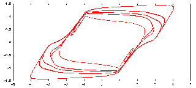
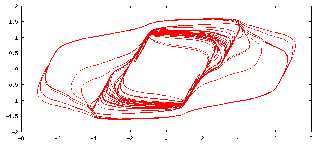
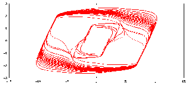

See also a Gallery of multispiral
Strange Attractors in the modified
Chua's dynamical system
See also a Gallery of multispiral
Strange Attractors in the modified
Chua's dynamical system
Ref ,
in the Int. Journ. of Bifurcation and Chaos 9(6), 1009-1039, (1999), (IJBC).
See also a Gallery of multispiral
Strange Attractors in the modified
Chua's dynamical system
See also some multispiral
Strange Attractors in some
nonautonomous dynamical system
See also some multispiral
Strange Attractors in some
Brocket type system
See also some multispiral
Strange Attractors in some
PWL Reich-Kapitaniak type system
The nonautonomous VanDerPol system is
dx/dt = y-f(x), dy/dt = -alpha.x + b.cos(t) ,
f(x)= x^3/3 - x, (alpha and b parameters). In the ref. given above, I modified f to get some new strange attractors showing `multibuckles' solutions:
|

|

|

|
Various strange attractors exhibited by the modified Vdp's system
Aziz Alaoui's home page